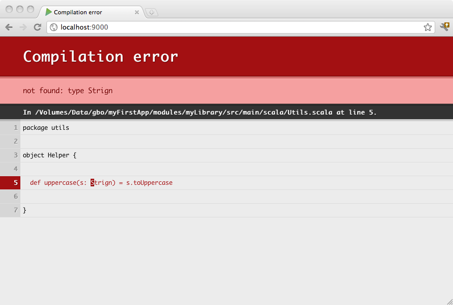

一个复杂的项目不一定只有一个Play 应用组成。你可以把一个大项目分成几个小的应用，甚至你可以把一些和Play 应用没关系的逻辑提取到一些标准的JAVA 或SCALA 类库里面。
阅读这篇文章 SBT documentation on multi-project builds.可以获得更多的帮助。sub-projects 没有它们自己的构建文件，它们和它们的父工程共享构建文件。
你可以让你的应用依赖一个简单的库工程。要做的只是在你的‘project/Build.scala’构建文件里面添加一个新的工程定义：
import sbt._
import Keys._
import play.Project._
object ApplicationBuild extends Build {
val appName = "my-first-application"
val appVersion = "1.0"
val appDependencies = Seq(
//if it's a java project add javaCore, javaJdbc, jdbc etc.
)
val mySubProject = Project("my-library", file("myLibrary"))
val main = play.Project(
appName, appVersion, appDependencies, path = file("myProject")
).dependsOn(mySubProject)
}
在这里我们在应用的‘myLibrary’文件夹里定义了一个 sub-project。这个 sub-project 是一个标准的sbt 工程，使用默认的layout：
myProject
└ app
└ conf
└ public
myLibrary
└ src
└ main
└ java
└ scala
project
└ Build.scala
当你在你的build 里面启用sub-project ，你可以只关注于这个子项目，单独编译测试运行它。可以在Play 控制台输入 project 命令来列出所有的项目。
[my-first-application] $ projects
[info] In file:/Volumes/Data/gbo/myFirstApp/
[info] * my-first-application
[info] my-library
默认的项目是项目名按字母排序的地一个项目。你可以使用aaaMain 命令来使用你的主要项目。你可以使用 project 命令来改变当前工程。
[my-first-application] $ project my-library
[info] Set current project to my-library
当你在开发模式下运行Play 应用，依赖的项目会自动编译，如果编译失败，你依然可以在浏览器里看到相关信息。

由于Play 应用只是一个含有默认配置文件的标准的sbt 工程，所以它可以依赖其它的Play 应用。
这个配置和之前的非常接近。配置你的 sub-project 就像配置 play.Project 一样简单。
import sbt._
import Keys._
import play.Project._
object ApplicationBuild extends Build {
val appName = "zenexity.com"
val appVersion = "1.2"
val common = play.Project(
appName + "-common", appVersion, path = file("common")
)
val website = play.Project(
appName + "-website", appVersion, path = file("website")
).dependsOn(common)
val adminArea = play.Project(
appName + "-admin", appVersion, path = file("admin")
).dependsOn(common)
val main = play.Project(
appName, appVersion, path = file("main")
).dependsOn(
website, adminArea
)
}
这里我们定义了一完整的被分割成两个部分的项目：website 部分和 admin 部分。这两个部分通过一个common 模块彼此依赖。
如果你想在编译测试主工程时同时依赖的子项目也重新编译和测试，那么你需要添加一个 “aggregate”选项。
val main = PlayProject(
appName, appVersion
).dependsOn(
website, adminArea
).aggregate(
website, adminArea
)
注意：为了避免名字冲突，请确保你的sub-projects 的 controller 包括 Assets controller 使用和主项目不同的命名空间。
由于 play 2.1 支持把 route 文件分割成为几部分。如果你想构建一个健壮的，可重用的多模块的Play 应用，这是一个非常方便的特性。
project/Build.scala
import sbt._
import Keys._
import play.Project._
object ApplicationBuild extends Build {
val appName = "myproject"
val appVersion = "1.0-SNAPSHOT"
val adminDeps = Seq(
// Add your project dependencies here,
"mysql" % "mysql-connector-java" % "5.1.18",
jdbc,
anorm
)
val mainDeps = Seq()
lazy val admin = play.Project(appName + "-admin", appVersion, adminDeps, path = file("modules/admin"))
lazy val main = play.Project(appName, appVersion, mainDeps).settings(
// Add your own project settings here
).dependsOn(admin).aggregate(admin)
}
app
└ controllers
└ models
└ views
conf
└ application.conf
└ routes
modules
└ admin
└ conf/admin.routes
└ app/controllers
└ app/models
└ app/views
project
└ build.properties
└ Build.scala
└ plugins.sbt
注意：只有一个application.conf 的实例，同时，在 admin 里面的route文件叫做 admin.routes。
conf/routes
GET /index controllers.Application.index()
-> /admin admin.Routes
GET /assets/*file controllers.Assets.at(path="/public", file)
modules/admin/conf/admin.routes
GET /index controllers.admin.Application.index()
GET /assets/*file controllers.admin.Assets.at(path="/public", file)
controllers.admin 包里面有定义modules/admin/controllers/Assets.scala:
package controllers.admin
object Assets extends controllers.AssetsBuilder
注意：Java 版本的可以有更简单的实现方法，如：
// Assets.java
package controllers.my;
public class Assets {
//can be referenced as `controllers.my.Assets.delegate.at` in the route file
public static controllers.AssetsBuilder delegate = new controllers.AssetsBuilder();
}
一个 controller:
package controllers.admin
import play.api._
import play.api.mvc._
import views.html._
object Application extends Controller {
def index = Action { implicit request =>
Ok("admin")
}
}
admin里面的反转路由对于常规的controller 调用：
controllers.admin.routes.Application.index
对于Assets：
controllers.admin.routes.Assets.at("...")
http://localhost:9000/index
触发
controllers.Application.index
以及
http://localhost:9000/admin/index
触发
controllers.admin.Application.index